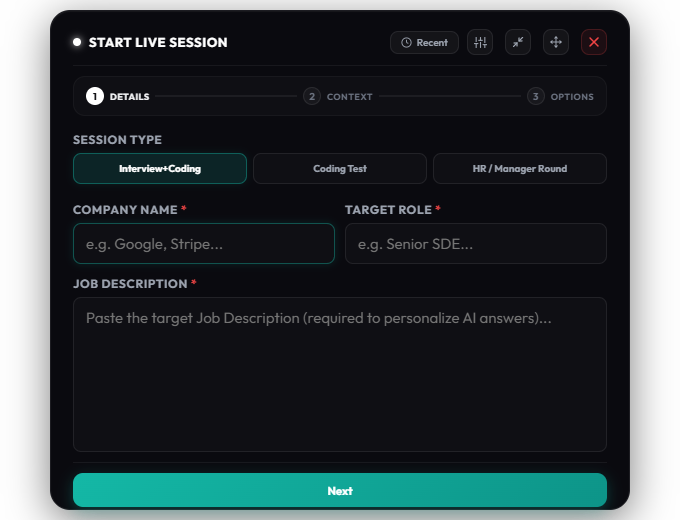
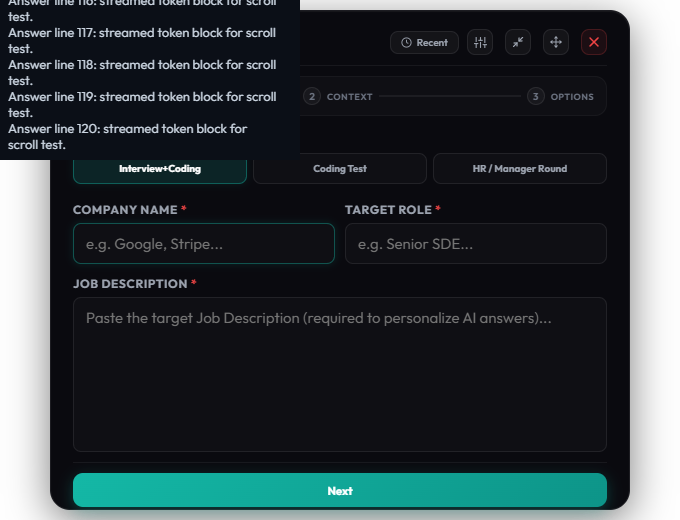
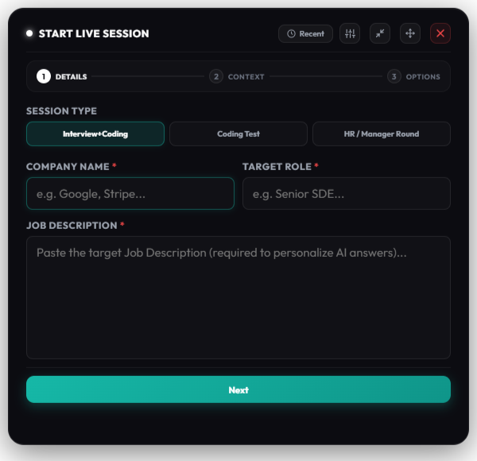

28/28 passed · 23/11/2026, 4:00:02 pm
Zoom-free, concealment-free. Real app via Playwright Electron; local mock backend; RM_TEST_MODE=1.
| Test | Expected | Actual | Status |
|---|---|---|---|
| Application startup — a window opened | a BrowserWindow | 1 window(s) | PASS |
| Overlay initialization — window visible with title | visible, titled | visible=true title=RM | PASS |
| Overlay initialization — default size present | > 0 w/h | 600x580 | PASS |
| Window positioning | x≈220,y≈130 | x=220,y=130 | PASS |
| Window resizing | 680x520 | 680x520 | PASS |
| Saved-bounds persistence (save + read back) | 640x480@300,200 | 640x480@300,200 | PASS |
| Saved-bounds written to userData state file | stealth_window_state.json exists | exists | PASS |
| Keyboard shortcuts registered with OS | both registered | toggle=true answer=true | PASS |
| Minimize | isMinimized true | min=true | PASS |
| Restore | isMinimized false, visible | min=false visible=true | PASS |
| Tray-style hide/show cycle (window hides to tray and restores) | hidden then shown | hidden=true shown=true | PASS |
| Long answer rendering is scrollable | scrollHeight > clientHeight | 3856 > 160 | PASS |
| Long answer can scroll to bottom | scrollTop > 0 | scrollTop > 0 | PASS |
| Application cleanup — process exits on close | process gone | exited | PASS |
| Restart & recovery — relaunches and restores a window | window with bounds | 600x580 | PASS |
| Test | Expected | Actual | Status |
|---|---|---|---|
| Backend streaming — tokens received | >0 chunks | 23 chunks | PASS |
| Backend streaming — completed (stream-end) | ret=end, total_ms set | ret=end, total_ms=410 | PASS |
| Completed answer assembled non-empty | non-empty text | 149 chars | PASS |
| Long answer streamed fully | ≥400 chunks | 400 chunks | PASS |
| Multiple questions answered in sequence | 3 completed | 3 completed | PASS |
| Duplicate-question guard present in renderer API | queryBackendStream exposed | exposed=true | PASS |
| Partial answer (dropped mid-stream) resolves, no hang | ends or errors, not timeout | ret=error | PASS |
| Backend failure (HTTP 500) surfaces error | error set, no chunks | error="Simulated backend failure", chunks=0 | PASS |
| Empty 200 response does not hang | ends, empty text | ret=end, len=0 | PASS |
| Malformed stream handled without hang | ends or errors | ret=end | PASS |
| Recovery — normal request succeeds after failures | completes again | ret=end, chunks=23 | PASS |
| Test | Expected | Actual | Status |
|---|---|---|---|
| TTFT latency over 12 runs (app-measured ttft_ms) | median reported | median 46ms p95 47ms max 47ms (n=12) | PASS |
| Total answer latency over 12 runs (app-measured total_ms) | median reported | median 401ms p95 403ms max 404ms (n=12) | PASS |


